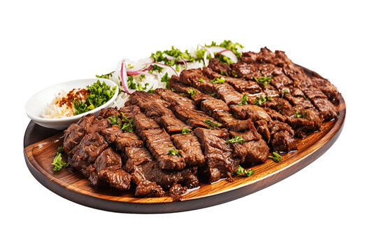

Suya

Description
Suya or tsire or chinchinga is traditional smoked spiced meat skewer which originates in Hausaland (Northern Nigeria and Southern Niger), and is a popular food item across West Africa.
Suya is a large part of Hausa culture and food and is traditionally prepared and made by Hausa men, thus called Mai nama or Aboki. Suya is generally made with skewered beef, ram, or chicken.
Organ meats such as kidney, liver and tripe are also used. The thinly sliced meat is marinated in various spices,
which include traditional Hausa dehydrated peanut cookie called 'kwulikwuli', salt, vegetable oil and other spices and flavorings,
and then barbecued.
There are many variation of Suya in traditional Hausa cooking (such as Balangu, Kilishi etc..), but the most popular being suya
Ingredients
- 1 cup salted peanuts
- 1 tablespoon paprika
- 2 teaspoons onion powder
- 2 teaspoons ground ginger
- 1 teaspoon crushed red pepper flakes
- 1 teaspoon garlic powder
- 1 beef tri-tip roast or beef top sirloin steak (2 pounds), thinly sliced against the grain
- 2 tablespoons canola oil
- 1 teaspoon salt
- 1 medium onion, cut into wedges
- 1 large tomato, cut into wedges
- Fresh cilantro leaves
Steps
- Place peanuts in a food processor; process until finely chopped. Add paprika, onion powder, ginger, pepper flakes and garlic powder; pulse until combined.
- Place beef in a large bowl or shallow dish. Drizzle with oil; sprinkle with salt. Toss to coat. Add peanut mixture; turn to coat. Refrigerate, covered, for 2 hours. Drain beef, discarding marinade.
- Thread beef onto metal or soaked wooden skewers. Grill, covered, over medium-high heat until beef reaches desired doneness, 10-15 minutes, turning occasionally. Serve with onion, tomato and cilantro.
Return to Homepage